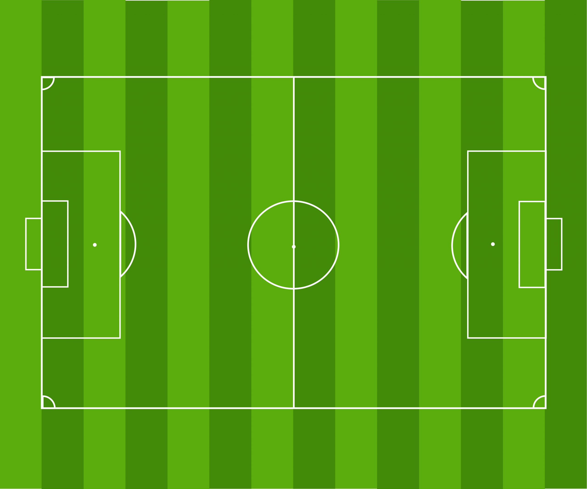

THE 2024/25 PLAYER VALUE LABBig names.
Big names.
Big money.
But big performances?
Explore your club. Compare the players. Find out who delivered in the 2024/25 Premier League.
Overrated. Underrated. You decide.
THE BIG QUESTIONWorth
every
penny?
HYPE ≠ VALUELET THE STATS TALK ↗
every
penny?
WAGES × PERFORMANCE↗
Your club. Under the microscope.
Pick a club. Tap a player. Compare their stats.
A different view of the game.
Spin the 3D view to explore player contributions.
Superstar or overpriced?
Check wages against performance. Make your call.
THE CLUB EXPLORER
01 / EXPLOREEvery player has a story.
Choose your club. Select a player on the pitch to open their profile and compare.
Loading the 2024/25 squad data…

DEFEND ← THE SQUAD → ATTACK Select a player to see their profileWant a head-to-head? Use the two player selectors in any profile. ↗